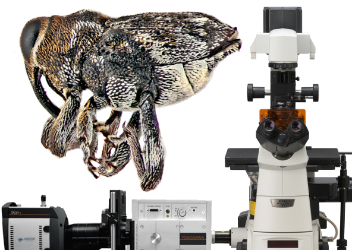

Horario
Lunes: 11:00 a 12:30
Miércoles: 12:30 a 15:00
Horario
Lunes: 11:00 a 12:30
Miércoles: 12:30 a 15:00
Actividades para el fin del curso
Morfología de insectos
• Lunes 12 a martes 20 de abril. Preparación de la versión final del trabajo de evaluación.
• Miércoles 21 de abril. 12:30. Presentación en grupo de los trabajos de morfología.
• Los trabajos se deben subir a más tardar el martes 20, a las 18:00. El contenido de la versión final en el drive debe ser igual a la versión en PDF que se subirá junto con las referencias bibliográficas. La estética o desplazamiento de texto y figuras puede ser algo diferente en ambas versiones, pero el contenido debe ser el mismo.
• Cuando se suba la versión final, agendar en la hoja de registro la entrevista con el profesor, para los días 22, 23 o 26 de abril.
Fotografía Científica

• Imagen digital y fotografía
• Fotografía en microscopía óptica
• Cámaras y adaptadores
• Procesamiento de imagen
• Software
• Análisis de imágenes
• Modelado 3D
Presentación:
• Fotografía científica.
Lecturas complementarias:
• Fotografía científica. Por Valeria Ramírez Becerril (2020).
••• Inicio del curso ••• Tema 1. Huevo y embriología ••• Tema 2. Integumento, segmentación y apéndices ••• Tema 3. Las extremidades cefálicas ••• Tema 4. La Cabeza ••• Tema 5. El tórax y las alas ••• Tema 6. El abdomen y sus apéndices ••• Tema 7. Órganos de ingestión ••• Tema 8. Aparatos digestivo y excretor ••• Tema 9. Aparatos circulatorio y respiratorio ••• Tema 10. El sistema nervioso ••• Tema 11. Órganos de los sentidos ••• Tema 12. Órganos internos de reproducción ••• Tema 13. Órganos genitales externos ••• Tema 14. Preparaciones histológicas ••• Tema 15. Microscopía electrónica ••• Tema 16. Fotografía científica